Innsiktsarbeid i Norges største pensjonsselskap
Tre måneder som UX- og tjenestedesigner i bedriftsmarkedet hos Storebrand — med fokus på å forstå kundebehov i et komplekst B2B-univers.
Oppgaven
Oppgaven vår var å finne nye måter Storebrand kan betjene sine mindre bedriftskunder på, og forstå hvorfor de eksisterende løsningene ikke strekker til.
Problemstilling: Hvordan kan Storebrand betjene sine mindre bedriftskunder bedre?
I de første ukene brukte vi mye tid på å snakke med folk i huset, delta på lytteøkter, og til slutt gjennomførte vi også kundeintervjuer over telefon for å få et bedre inntrykk av problemområdet.
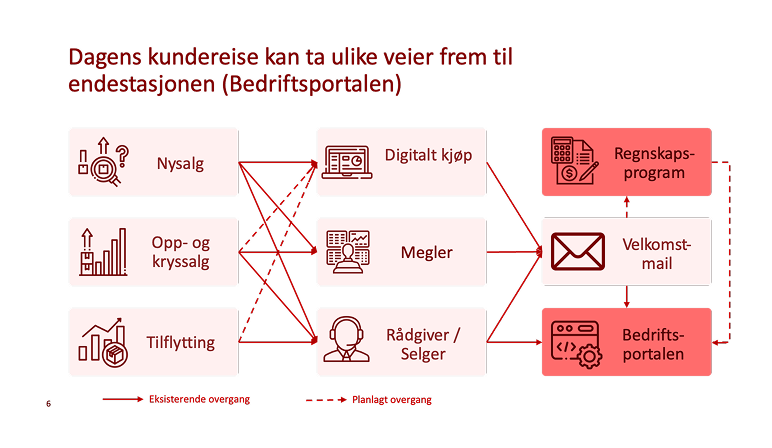
Forskning
Etter at vi identifiserte funn og mønstre, formulerte vi en rekke hypoteser
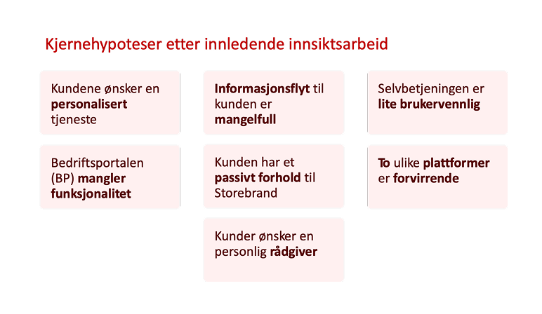
Definere data
For å få oversikt over i hvilken grad de ulike hypotesene ble styrket eller svekket av funnene, brukte vi følgende rammeverk:
Vi sorterte etter positive og negative funn. Fargen på lappene sier noe om styrken på funnet — konsistente utsagn fra kunder gir et sterkere funn og dermed en mørkere farge.

Oppsummering av hovedfunn: Kunder opplever at BP er tilpasset store bedrifter

Landingssiden er inngangen til resten av BP
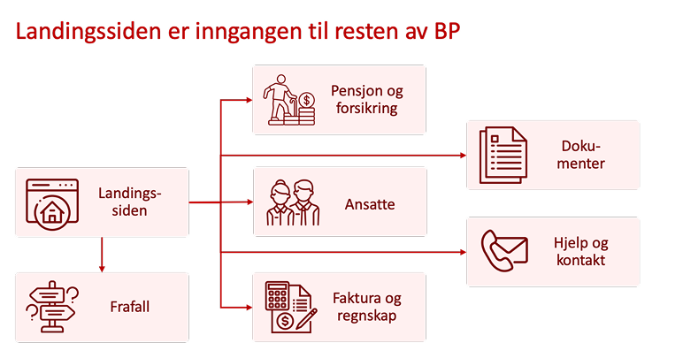
Problemet var følgende:
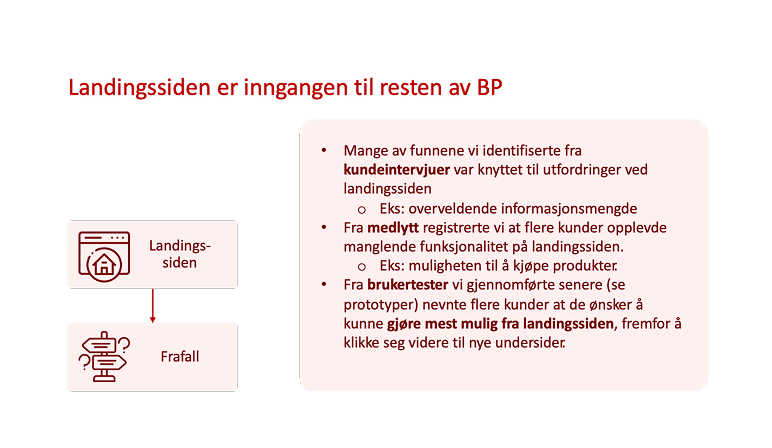
Klikk på BP-forsiden indikerer at mange av modulene kundene bruker mest, tar opp minst plass på skjermen. F.eks. menylinjen øverst. Mange av de minst brukte modulene tar opp mest plass.
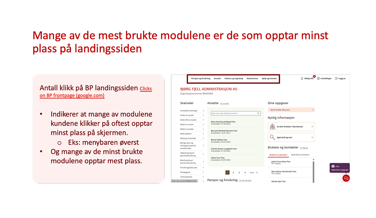
Vi valgte å fokusere på bedrifter med 2–10 ansatte
Bedriftsportalen i dag:
- Tilpasset større kunder
- Lik for alle kundesegmenter
- Overveldende for mange mindre kunder
Bedrifter med 2–10 ansatte:
- Nesten halvparten av bedriftene i porteføljen
- Bidrar til flest henvendelser til kundefronten og dermed stor ressursbruk
- Har potensial til å bli større kunder
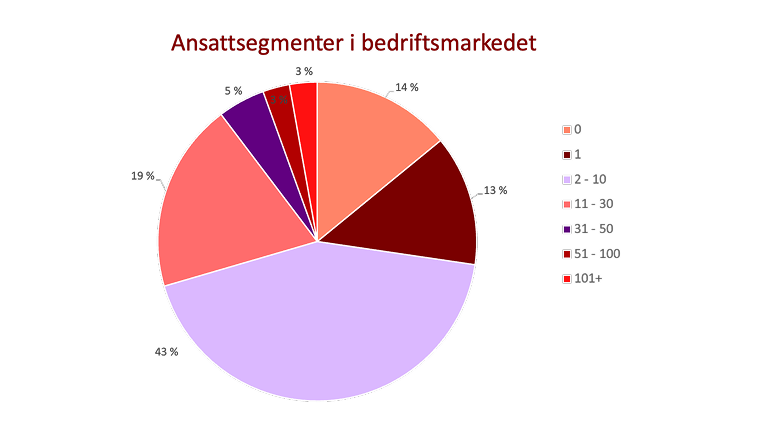
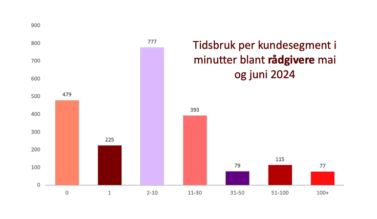
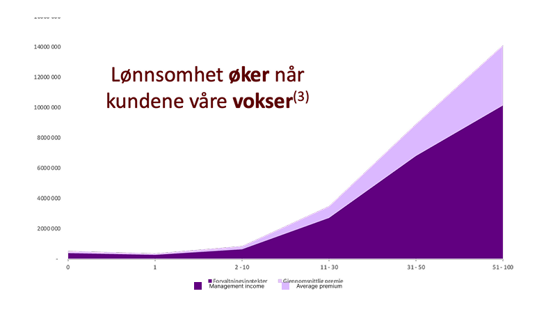
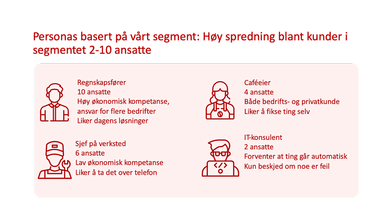
Nøkkelfunn
Foreslåtte løsninger:
Basert på innsiktsarbeidet og datagrunnlaget utviklet vi to ulike løsningsforslag: personalisering av Bedriftsportalen tilpasset mindre kunder, og integrasjon mot regnskapssystemer for å møte kundene der de allerede er.

Personaliseringsløsning
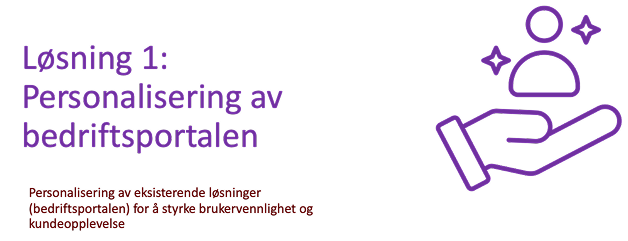
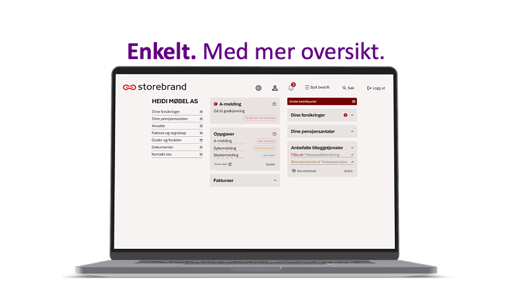
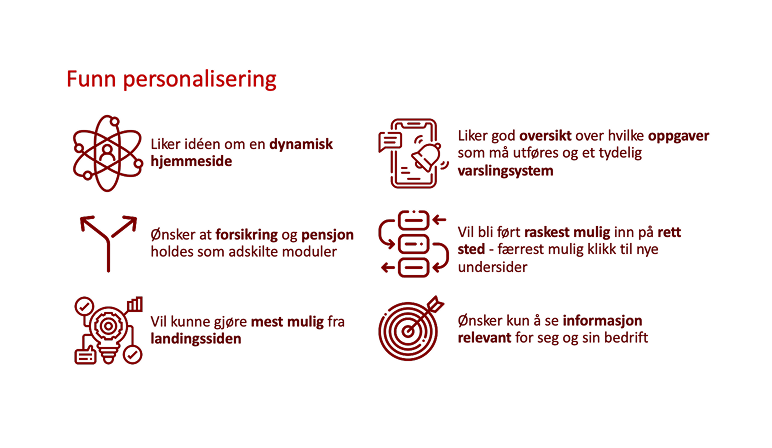
Integrasjonsløsning
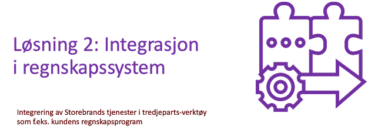
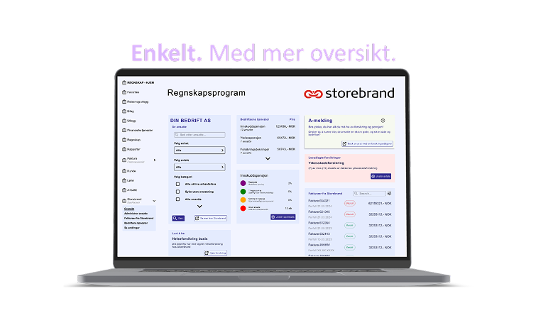
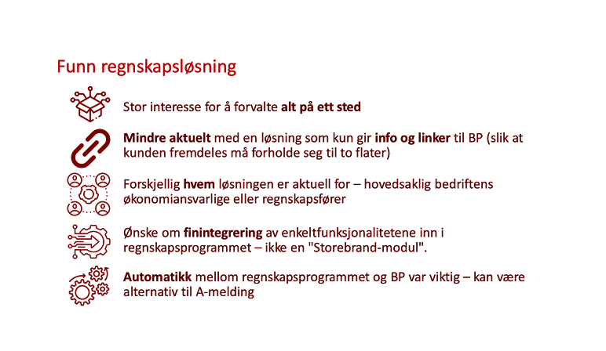